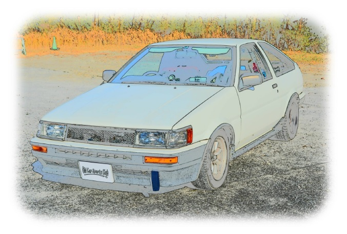

自分の乗っている車について紹介です
- １９８３年 カローラレビン AE86 GTV
１６００（４A-GEU）５速マニュアル E-AE86-ECMQF
車両重量・９４０ｋｇ、車両総重量・１２１５ｋｇ、最小回転半径・４．８ｍ
ステアリング型式：ラック＆ピニオン式
サスペンション：前・ストラット式＆コイルスプリング 後・ラテラルロッド付４リンク コイルスプリング・スタビライザー
ブレーキ：前・ベンチレーテッドディスク 後・ディスク
今回初めて独学で得た知識のみでの初ホームページ出来ました…
ここまで作成までに要した時間は2週間でした。
これからわたくしぽんちゃんキングのことを書いていこうと思います。
主に自分の愛車に関する記事が多くなるかと思いますが、宜しくお願い致します。
１６００（４A-GEU）５速マニュアル E-AE86-ECMQF
車両重量・９４０ｋｇ、車両総重量・１２１５ｋｇ、最小回転半径・４．８ｍ
ステアリング型式：ラック＆ピニオン式
サスペンション：前・ストラット式＆コイルスプリング 後・ラテラルロッド付４リンク コイルスプリング・スタビライザー
ブレーキ：前・ベンチレーテッドディスク 後・ディスク